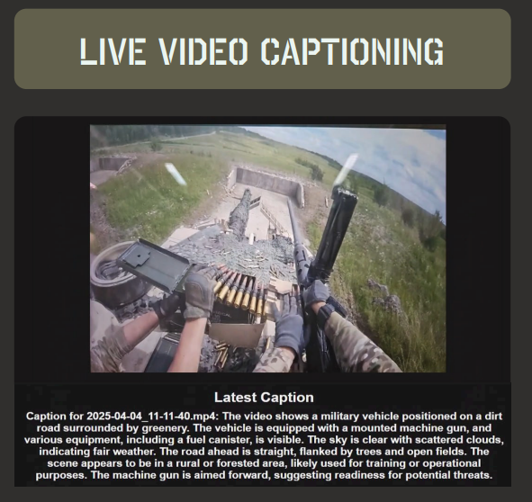
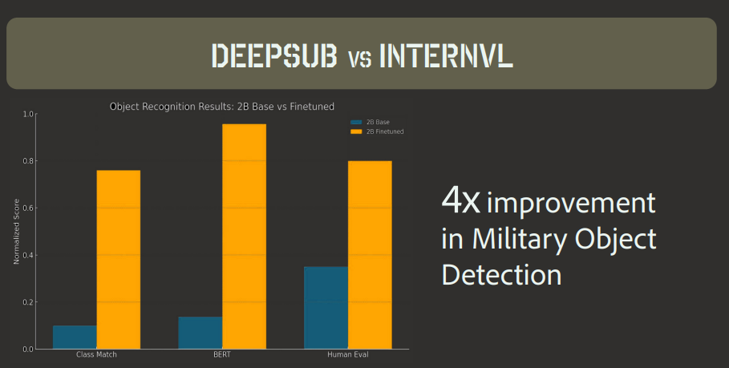
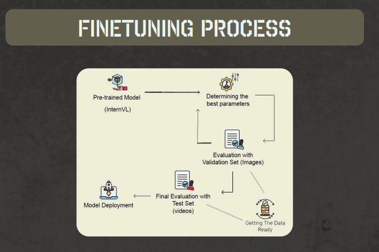
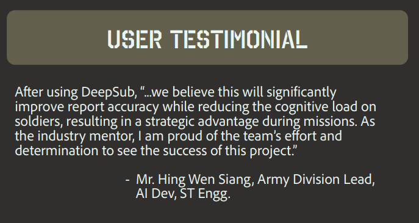

Project Overview
Our team was tasked to develop a video captioning system that can generate captions for military scenarios. The system should be able generate detailed captions that describe the actions and events taking place in the video.
The system should also be able to generate captions that are relevant to the military context, such as identifying specific objects, actions, and events that are relevant to military operations. We were also tasked to ensure that the system is able to generate captions in real-time, so that it can be used in live military operations.
We named our final model DeepSub, a fine-tuned vision transformer model with InternVL2 as the base open source model. With our evaluation, our new model has achieved about 4x improvement in military object specificity when generating captions.
Highlights




Key Contributions
- Research: Conducted research on different architectures like CNNs, LSTMs and Transformers which eventually lead to the final decision of fine-tuning an open source vision transformer model.
- Dataset Curation: Filtered and processed a large-scale video dataset, using open-source multimodal embeddings to identify and extract domain-relevant content, complemented with human evaluation to ensure quality and relevance.
- Model Training: Supervised the process of finetuning the InternVL2 model and evaluation with the curated dataset.
- Model Evaluation: Evaluated the model performance using popular captioning metrics such as METEOR and SPICE, as well as a custom human metric that measures the military object specificity of the generated captions.